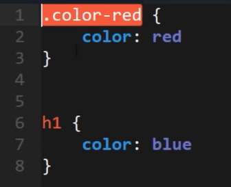
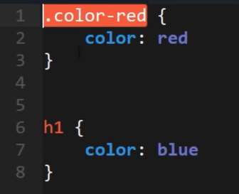

Universal
El selector universal selecciona todos los elementos de una web: * {color: red;}
Tipo
Seleccionamos por nombre de elementos: h1 {color: red;}
Clase
Asignar clase a la etiqueta: <h1 class="clase">
ID
Es similar a la clase, pero en vez de utilizar un punto, utilizamos un "#".
Además, el ID es un identificador único. Por más que sea posible, no se debería repetir: <p id="identificador">
Atributo
Para comprender qué es un atributo es necesario conocer la estructura de las etiquetas.

Podemos crear atributos y hacer referencia a ellos en CSS de la siguiente manera: <p ejemplo="atributo">
Descendiente
De esta manera modificamos únicamente un elemento dentro de la etiqueta.
En el caso de <p><b>ejemplo</b></p> colocamos: p b {color:red} en CSS.
Pseudo-Class
Es la modificación de una clase ante determinada acción. Ejemplo: si pasamos el mouse sobre una palabra, la misma cambia de color.
En CSS se debería hacer referencia de la siguiente manera: .pseudo-class:hover {color:red;}
 
